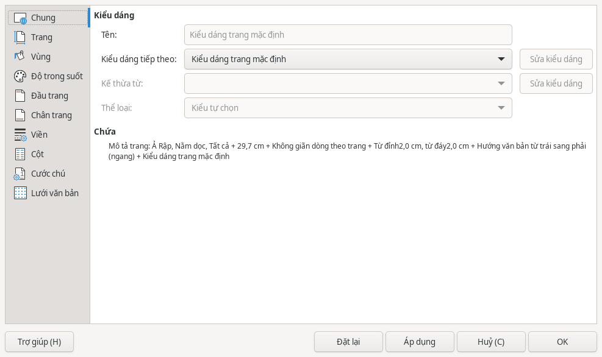
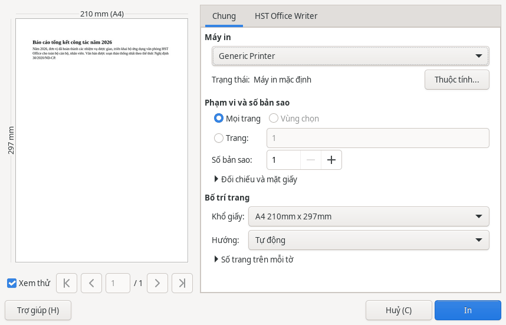
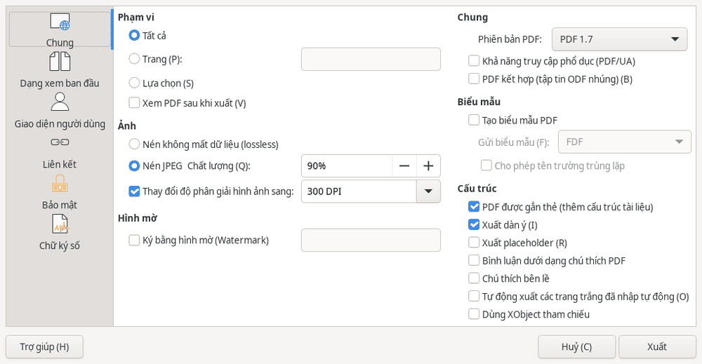

Văn bản
Văn bản: trang, in và PDF
Khổ giấy và lề trang
Khổ giấy mặc định là A4. Để chỉnh khổ giấy và lề, dùng thẻ hoặc mở .

Đầu trang, chân trang và số trang
Các lệnh thêm , và đánh số trang nằm trên thẻ .
Để ngắt sang trang mới, đặt con trỏ tại chỗ cần ngắt rồi nhấn Ctrl+Enter.
Nếu đang soạn văn bản hành chính, xem tùy chọn lề và số trang của công cụ NĐ 30.
In tài liệu
- Chọn hoặc nhấn Ctrl+P.
- Chọn .
- Trong , chọn phạm vi cần in và số bản sao.
- Kiểm tra bản xem trước bên trái, khổ giấy và hướng giấy, rồi bấm .

Xuất PDF
- Chọn .
- Trong , chọn , hoặc theo phần cần xuất.
- Bấm .

Với tài liệu quan trọng gửi ở định dạng Word, Excel hoặc PowerPoint, hãy mở lại tệp đã lưu để kiểm tra hoặc gửi kèm bản PDF.